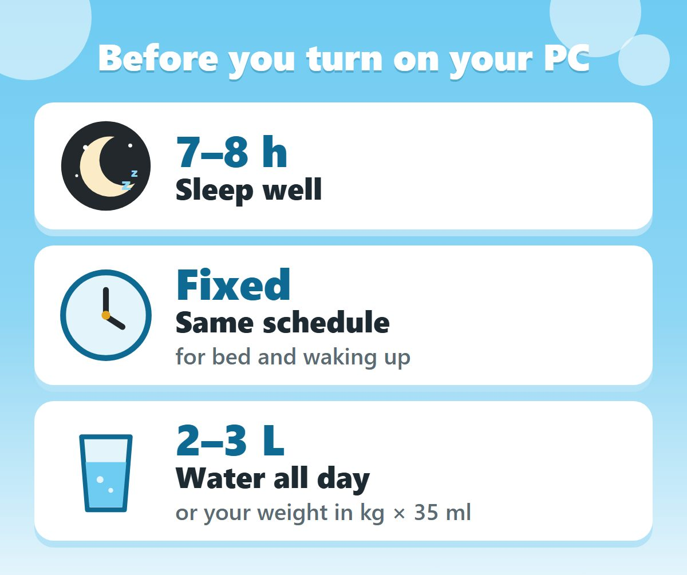
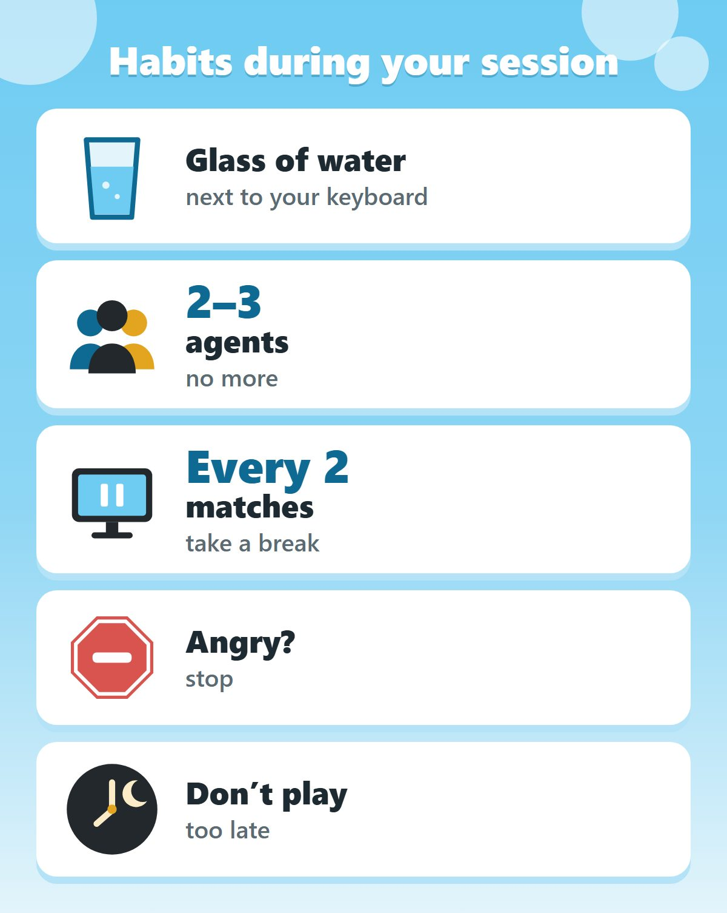

How to Warm Up in Valorant: The Routine That Got Me to Radiant
Short answer
The routine that got me to Radiant has four steps: sleep seven to eight hours on a fixed schedule and stay hydrated, warm up your aim in Aim Lab with the Voltaic Valorant Warmup playlist, warm up your mechanics in the Range (flicks, counter strafing, spray transfer and dead zoning), and finish with one deathmatch played with intention. It isn't about improving: it's so you start every match at one hundred percent of your ability.
Download the routine summary
The whole video in two pages: the routine plus a daily checklist to print or keep open next to you.
This isn’t a rule: it’s what has worked for me as a 3x Radiant player.
Why you need a routine before you play
Think about everything that happens during a match. You're not dueling all the time: a round lasts a minute and a half, and a real duel is only a few seconds of that. The rest is walking, rotating and waiting. Valorant is a game of duels separated by a lot of dead time.
That's the problem. If you go into a match cold, there's no way to properly warm up mid-game, because you don't get enough reps. You end up using the first rounds just to calibrate, and that doesn't just cost you a few duels: it costs you rounds, games and rank.
So the routine isn't about improving. It exists for one thing only: so that when you get into a match, you're at one hundred percent of your ability.
Step 1: sleep well and stay hydrated
The first step starts before you even turn on your computer, and it's the only one that doesn't train any mechanic. I know how it sounds, but everything else in this routine depends on it: bad sleep or dehydration is the only thing that directly takes away your reaction time, no matter how much you prepare before playing. In a game where time to kill is as short as Valorant's, that matters a lot.
It also makes your performance measurable from one day to the next. If you sleep five hours one day and eight the next, there's no way to know if you actually improved or just slept well.
- Sleep seven to eight hours, on a fixed schedule. Nobody tells you this: even if you get your eight hours, changing the time you go to bed and wake up still hurts your performance. If you've ever slept well and still felt tired, this could be why.
- Stay hydrated throughout the day, not just while playing. The recommendation is two to three liters of water a day, or your weight in kilos times 35 milliliters.
This is the foundation for your cognitive abilities to be at their peak.

Step 2: warm up your aim in Aim Lab
Now you can turn on your PC. Open Aim Lab and search for the Voltaic Valorant Warmup playlist. Voltaic is the biggest aiming community in the world, and they designed this playlist specifically for Valorant, with exercises that prepare you for your duels.
- Four exercises, three reps each. They focus on micro adjustments, speed and precision when aiming.
- In exercises one, two and three, place your crosshair where you think the target is going to go, and shoot when it enters your crosshair. You're practicing crosshair placement.
- Exercise four is just flicks.
Don't practice tracking. It's a huge mistake I always see. Tracking is a valid skill for aim in general, but in Valorant it barely shows up: most of the time you aim with micro adjustments, micro flicks, pre-aim or crosshair placement. That's what's worth warming up. If you start tracking the target in these exercises, you'll react slower and build a bad habit for Valorant.

Step 3: warm up your mechanics in the Range
This is the part almost nobody does. An aim trainer only works on aim, and that's not enough: Valorant has mechanics that Aim Lab can't replicate, like movement, recoil, shooting accuracy or even how the game looks. So after Aim Lab, jump into the Range in Valorant and do four exercises, at least one minute each, always with your favorite rifle:
- Flicks. Prioritize speed and accuracy. Change up the height and distance of the targets.
- Counter strafing with two-bullet bursts. Make your counter strafe distances as varied as possible, and vary the distance to the bots too. Personally, I like to add one more round from up close, in between the bots.
- Spray transfer. Keep the transfers realistic: you'll rarely do one with such a long flick. In those cases you're better off moving to make the enemy miss, and shooting after. That way you'll be much more consistent than throwing a flick.
- Dead zoning. Switch targets while moving left and right, shooting at the exact moment you change direction. Vary the length of your movement and the distance to the bots.
Crosshair for counter strafing and dead zoning: it helps you see your movement more clearly. Import it with this code in your crosshair settings:
0;c;1;s;1;P;c;1;o;1;d;1;z;1;s;0;m;1;0t;1;0l;2;0v;2;0o;2;0a;1;0m;1;1b;0;S;s;0.5;o;1

Step 4: one deathmatch, with intention
Finish the warm-up with a deathmatch or a team deathmatch. This is where almost everyone messes up: don't go on autopilot. Be aware of every duel and take it with intention: crosshair placement, movement, make the enemy miss, and stay calm. You're giving the final polish to everything you just warmed up. You're not trying to win the deathmatch.
Before you skip your warm-up
This is how I warmed up to reach Radiant. Some people will need more time, some will need less, and some will prefer other exercises. What I always recommend is to warm up, preferably inside Valorant, because of the mechanical differences I mentioned.
Think about it: if two people faced off in Valorant and you had to bet your entire life savings, who would you bet on? The one who spent ten minutes warming up, or the one who just turned on their computer? In every match you're putting your points on the line to rank up. Think about that before you skip your warm-up.
Habits during your session
Reaching your level is one thing, but keeping it for the whole session is something completely different. These are the habits I had in every match:
- Always have water. This is different from your daily hydration: a glass of water while you play, sipping it little by little. A match is at least thirty minutes of focus; if you haven't had anything after three matches, don't be surprised if you play worse.
- Play few agents. Each agent is a whole set of different abilities, timings and decisions. If you play too many, you won't master any of them. Play two or three agents: you'll improve faster and be more consistent.
- Take a break every two matches, no exceptions. Get up, stretch, walk a bit, go to the bathroom, whatever. If you're the type who cools off during a break, hop back into the Range for a bit before queuing again.
- If you get angry, stop. A lot of the time, tilt doesn't come from playing badly, it comes from fatigue: when you're fresh, a bad round gives you information; after three hours, that same round just makes you angry. You'll also get frustrated by toxic people, and even though it's not fair, you should stop for a moment or even for the day. Carrying anger from one match into the next will only make you play worse.
- Don't play too late. It completely contradicts step one: you sleep badly and tomorrow you start from the bottom. Today's session also affects tomorrow's.

The one rule I followed during my entire climb: play to improve, not to win
This is the one rule I followed during my entire climb, and the one that really made the difference: play to improve, not to win.
I know it might sound frustrating, and trust me, I've been there too. But ranking up is a consequence of improving, not the other way around. If you only focus on ranking up, you don't see the full picture: you get stuck on the result of the match and you don't see your reality. Did you communicate well with your team? Did you play with the right aggression? Did you exploit your enemy's weaknesses?
Focus on your performance, round by round. Don't stack up past results: look at each round as its own round, and notice what you did well, what you did wrong and what you can improve.
Frequently asked questions
How long does the warm-up take?
The full routine takes 20 to 30 minutes, mostly because of the deathmatch: the Aim Lab playlist, the four Range exercises (at least one minute each) and one deathmatch.
What's the minimum warm-up you recommend?
The four Range exercises, one minute each, and one deathmatch. That's 10 to 15 minutes.
Why not practice tracking for Valorant?
Because it barely shows up in Valorant. Most of the time you aim with micro adjustments, micro flicks, pre-aim or crosshair placement.
Is warming up in an aim trainer enough?
No. An aim trainer only works on aim. Movement, recoil, shooting accuracy and how the game looks can only be warmed up inside Valorant, which is why I go to the Range after Aim Lab.
How often should you take a break between matches?
Every two matches, no exceptions: get up, stretch or walk a bit. If you cool off, hop back into the Range for a while before queuing again.